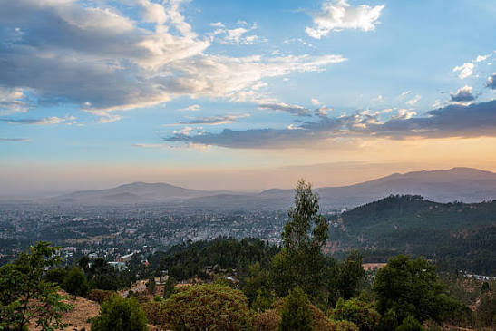
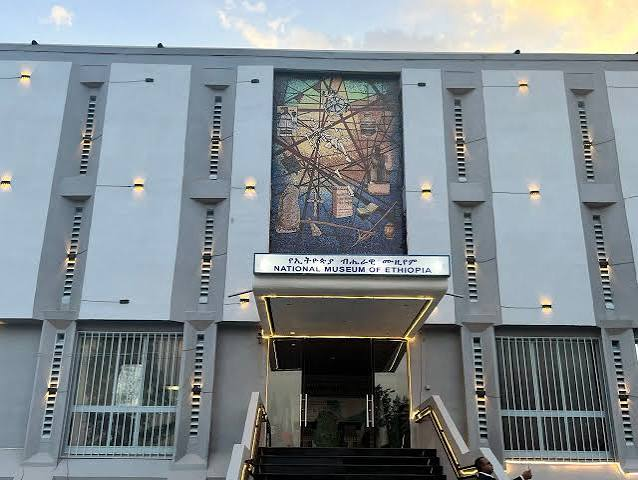

Popular Places in Addis Ababa
1. Entoto Mountain

Entoto Mountain is one of the popular natural attractions in Addis Ababa. Visitors can enjoy fresh air, green forests and beautiful views of the city.
2. National Museum of Ethiopia

The National Museum of Ethiopia is a great place to learn about the history and culture of Ethiopia. It is also home to the famous fossil remains of Lucy.
3. Unity Park
Unity Park is located inside the National Palace. It offers visitors a chance to explore Ethiopian history, gardens and cultural attractions.
Places Around Addis Ababa
4. Debre Libanos
Debre Libanos is a historic monastery located outside Addis Ababa. The area is known for its beautiful landscapes and mountain views.
5. Wenchi Crater Lake
Wenchi is a beautiful natural destination known for its crater lake, green mountains and peaceful scenery.
Destination Comparison
Here is a simple comparison of some destinations you can visit.
| Destination | Location | Main Attraction |
|---|---|---|
| Entoto Mountain | Addis Ababa | Nature and city views |
| National Museum | Addis Ababa | History and culture |
| Unity Park | Addis Ababa | History and gardens |
| Debre Libanos | Oromia Region | Historic monastery and scenery |
| Wenchi Crater Lake | Oromia Region | Lake and mountain views |
Explore More
Want to know how to prepare for your trip? Visit our travel guide for useful information.
Read the Travel Guide